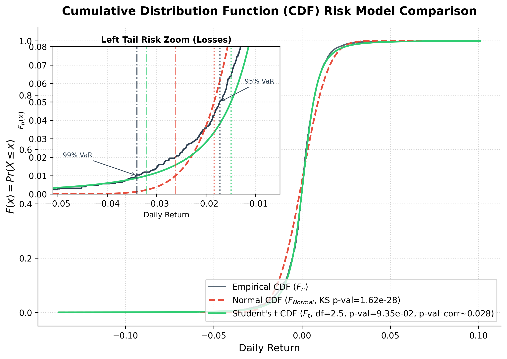

Quantitative Financial Risk Engine
An analytical framework calculating Value at Risk (VaR) on real-world financial indices. We fit and validate theoretical distributions (Normal and Student's t) against historical asset returns using continuous Cumulative Distribution Functions (CDF) and Kolmogorov-Smirnov goodness-of-fit testing.

Continuous CDF & Zoomed Tail Comparison
This empirical vs. parametric fit plot models the historical returns of the S&P 500 Index over a 10-year span (2016-2026).
The primary plot graphs the Cumulative Distribution Functions. The inset graphs the left-tail risk zoom, showing that the Gaussian normal curve model (dashed red) severely underestimates losses at high confidence intervals, whereas the Student's t distribution (solid green) models the "heavy tails" with superior accuracy.
- Empirical CDF (Step Function): Tracks exact historical percentile values.
- Parametric Gaussian CDF: Underestimates extreme market tail risk.
- Student's t-CDF (MLE Fit): Effectively captures leptokurtic behavior.
Mathematical Foundations
The core statistical theory, concepts, and convergence principles driving the risk engine calculations.
Continuous CDF
Let $X$ represent the continuous random variable of daily returns. The Cumulative Distribution Function (CDF), $F(x)$, computes the probability that a return is less than or equal to $x$.
Quantile Theory & VaR
Value at Risk ($\text{VaR}_c$) at confidence $c$ corresponds to the $(1-c)$-quantile of the return distribution, representing the loss threshold exceeded with probability $1-c$.
eCDF & Convergence
By the Glivenko-Cantelli Theorem, the empirical step function $F_n(x)$ converges uniformly to the true underlying CDF $F(x)$ almost surely as $n \to \infty$.
Normal Model Fit
Parametric Gaussian model fitted via MLE estimates mean $\hat{\mu}$ and variance $\hat{\sigma}^2$. VaR is mapped via standard normal quantile $Z_{1-c}$.
Student's t Fit
Accounts for leptokurtosis (fat tails) with degrees of freedom parameter $\nu$, location $\mu$, and scale $s$, optimizing fit on historical returns via numerical MLE.
Kolmogorov-Smirnov Test
Calculates the supremum (maximum distance) $D_n$ between the Empirical CDF $F_n(x)$ and theoretical CDF $F_{\text{model}}(x)$ to evaluate distribution validity.
Project Documentation & Resources
Access the mathematical project report, data assets, and CLI codebase.
Project Report (PDF)
Complete academic report covering theory & equations
Probability & Statistics Textbook
DeGroot & Schervish (Course Reference Material)
CLI Risk Engine (Python)
Command-line statistical engine and MLE fitting script
Report Blueprint (Markdown)
View the raw mathematical report in Markdown format